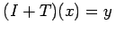
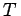
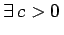
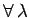
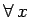
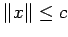

Für die Existenz von Lösungen der Gleichungen x=T(x) und , mit jeweils vollstetigem Operator , ist auf der Grundlage tiefliegender Eigenschaften des Abbildungsgrades ein weiteres Prinzip entdeckt worden, das etwa für Existenzbeweise bei nichtlinearen Randwertproblemen erfolgreich eingesetzt wird. Die hier angeführten Resultate dieser Theorie sind für praktische Belange vielfach die geeignetsten, wobei Formulierungen gewählt wurden, die ohne Erwähnung des Abbildungsgrades auskommen.
eine gleichmäßige apriori-Abschätzung gestatten, d. h. , so daß  und , die (12.200) genügen, die Ungleichung  gilt, dann besitzt die Gleichung x=T(x) eine Lösung.